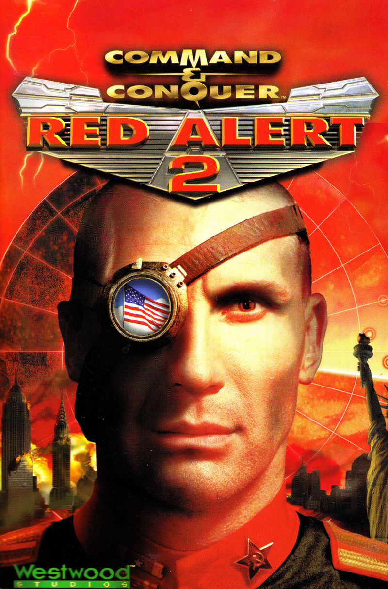

Synopsis
In Red Alert 2, the Soviet Union led by Joseph Stalin tried to conquer Europe, but was defeated by the Allies and his army was destroyed. Fearing that the regime change would lead to large-scale unrest in the Soviet Union, the victorious Allies installed Alexander Romanov, a distant relative of Tsar Nicholas II, as a pseudo-Soviet prime minister. Romanov initially requested to replace the Allies, although he formed a Soviet army for "defense purposes" and intended to invade the United States. The storyline of the game began in 1972, when the USSR suddenly invaded the United States on a large scale, the armed forces were completely caught by surprise, Soviet aircraft, naval ships, amphibious forces and paratroopers all entered the east and west coasts, and most Soviet ground forces entered through Mexico. , The third world war. Attempts to retaliate against the use of nuclear missiles, but the Iranian leader Yuri Soviet psychological unit and Prime Minister Romanov's top adviser used his mind control to manipulate the staff responsible for launching the warhead and left it in the silo to explode . Within a few hours, the United States had been occupied by Soviet troops. Players play the role of American commanders. General Ben Cavill's mission is to defend the United States, or the Soviet commander will lead Prime Minister Romanov's invasion.